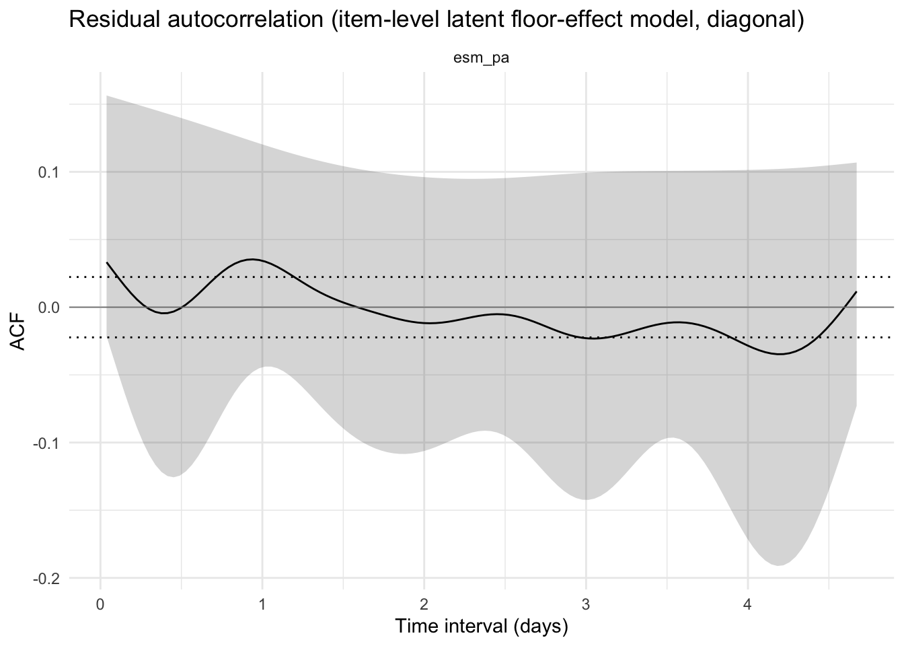
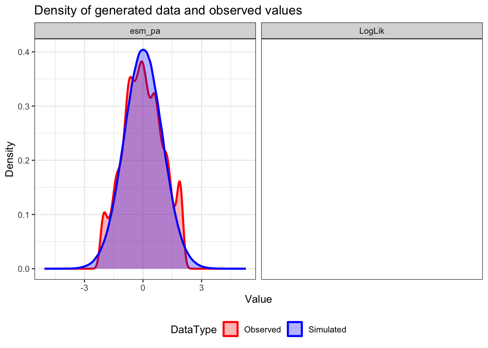
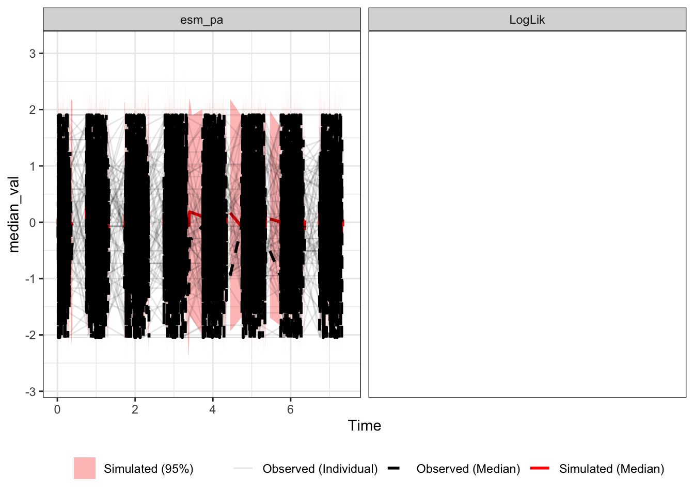
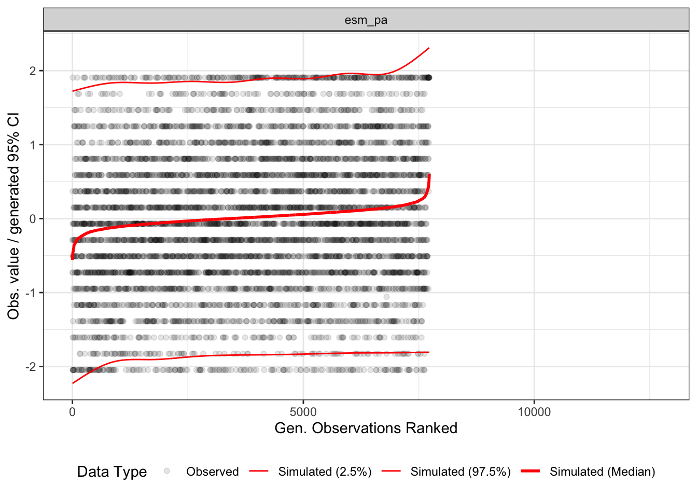
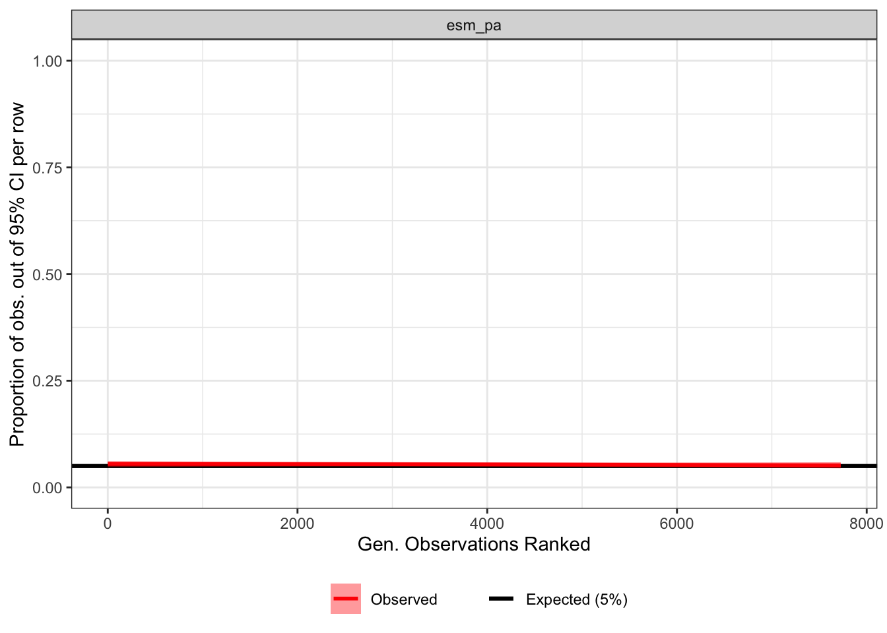
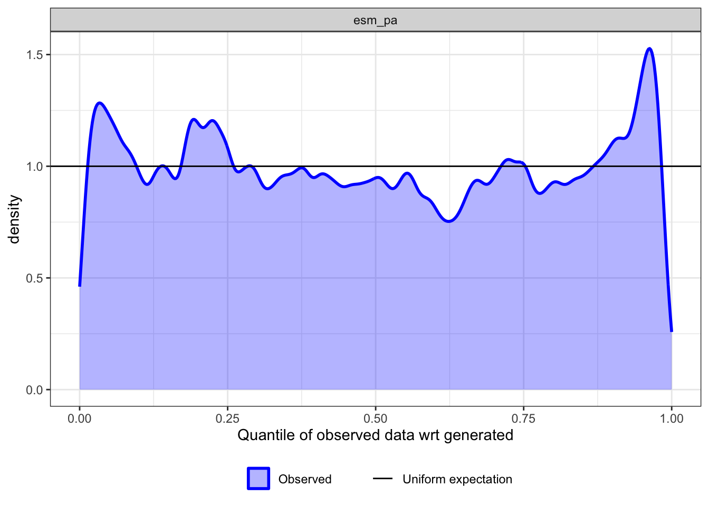
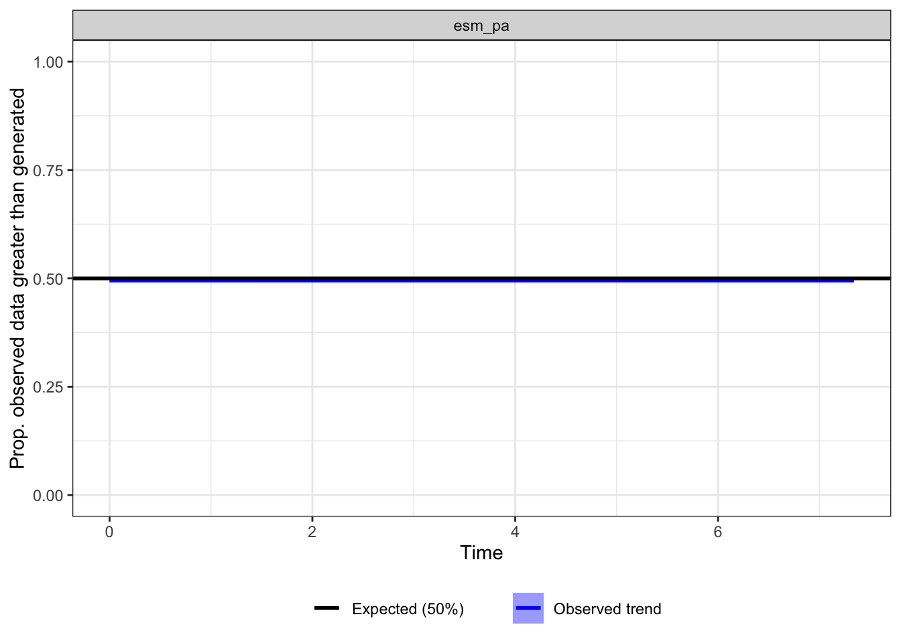
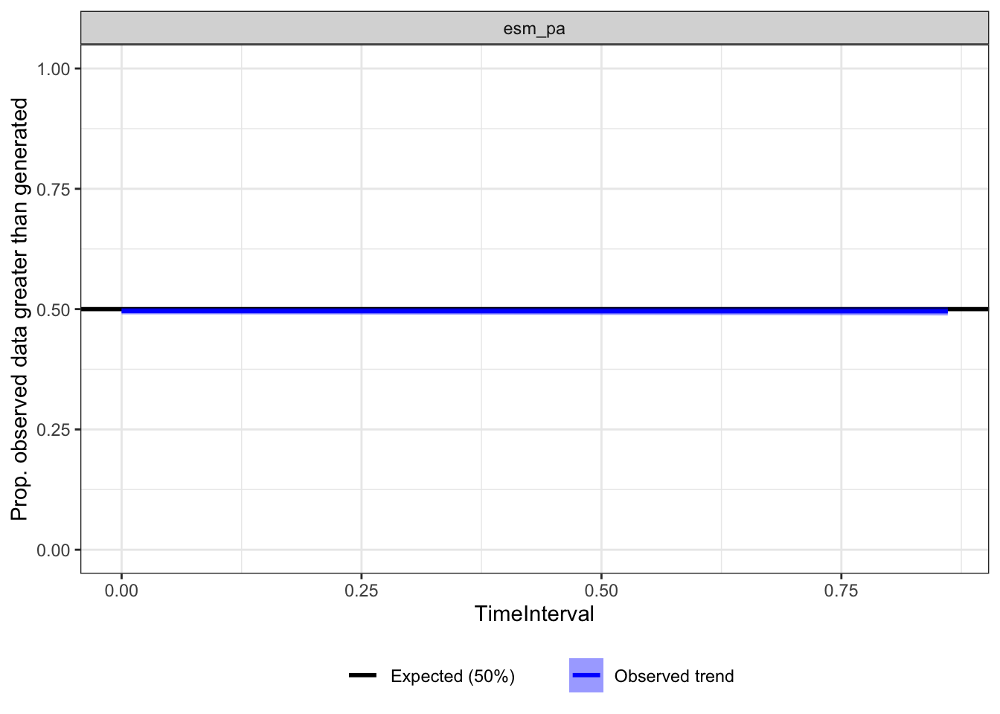
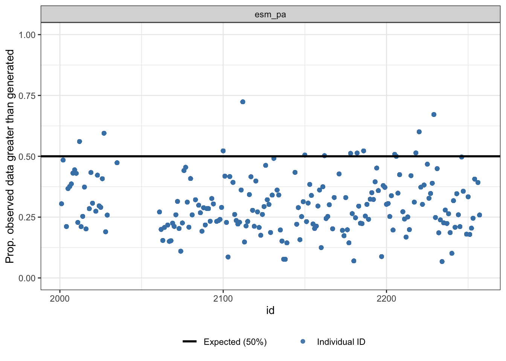
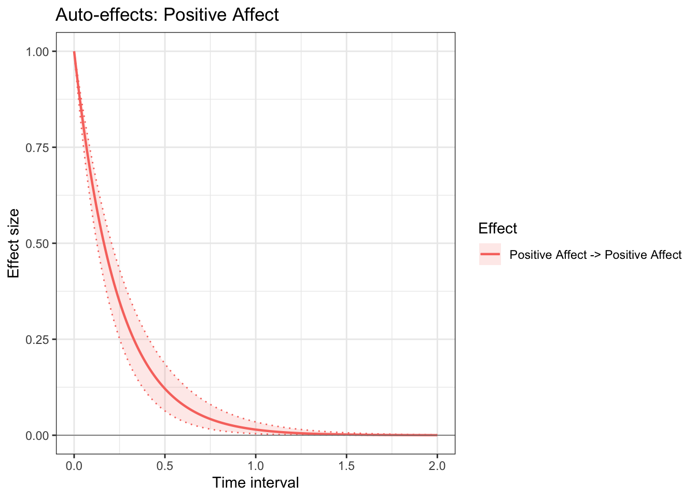

2 Positive Affect
2.1 Initial Set Up
2.1.1 Load Packages/Cust Functions
2.2 Observed Model
2.2.1 Standardize Variables
p2_data <- p2_data %>%
mutate(across(c(esm_pa, zpos, zneg, zdis), scale))
p2_data %>%
select(esm_pa, zpos, zneg, zdis) %>%
psych::describe() vars n mean sd median trimmed mad min max range skew kurtosis
esm_pa 1 7726 0 1 -0.07 0.00 0.98 -2.05 1.91 3.95 0.02 -0.64
zpos 2 12723 0 1 -0.28 -0.16 0.93 -0.91 3.29 4.20 1.17 0.52
zneg 3 12723 0 1 -0.35 -0.19 0.69 -0.81 4.80 5.61 1.85 3.85
zdis 4 12723 0 1 -0.42 -0.21 0.48 -0.75 3.30 4.05 1.57 1.47
se
esm_pa 0.01
zpos 0.01
zneg 0.01
zdis 0.012.2.2 Model Specification
pos_ctsem <- "
# Measurement Model
posaff_B =~ esm_pa
posaff_W =~ esm_pa
# Between/Trend
posaff_B ~ posaff_B
posaff_B ~~ 0*posaff_B # this is what tells model its between-person
posaff_B %~% posaff_B
# Within (dynamic) factor
posaff_W ~ posaff_W
posaff_W ~~ posaff_W
posaff_W %~% posaff_W
# CINT
posaff_B ~ 1
"
pos_ctsem_syn <- ct_lavaan(pos_ctsem) 2.2.3 Fit Model
pos_ctsem_mod <- ctModel(
type = "ct",
id = "id",
time = "time_day",
latentNames = pos_ctsem_syn$latentNames,
manifestNames = pos_ctsem_syn$manifestNames,
LAMBDA = pos_ctsem_syn$LAMBDA,
DRIFT = pos_ctsem_syn$DRIFT,
DIFFUSION = pos_ctsem_syn$DIFFUSION,
T0VAR = pos_ctsem_syn$T0VAR,
CINT = pos_ctsem_syn$CINT,
T0MEANS = pos_ctsem_syn$T0MEANS,
MANIFESTMEANS = pos_ctsem_syn$MANIFESTMEANS,
manifesttype = pos_ctsem_syn$manifesttype,
n.TIpred = 3,
TIpredNames = c("zpos", "zneg", "zdis")
)
pos_ctsem_mod$pars[, c("zpos", "zneg", "zdis")] <- FALSE
target <- pos_ctsem_mod$pars$matrix == "DRIFT" &
pos_ctsem_mod$pars$row == "posaff_W" &
pos_ctsem_mod$pars$col == "posaff_W"
pos_ctsem_mod$pars[target, c("zpos", "zneg", "zdis")] <- TRUE
pos_ctsem_fit <- ctStanFit(
datalong = p2_data,
ctstanmodel = pos_ctsem_mod,
cores = 10, plot = FALSE, priors = TRUE
)
saveRDS(pos_ctsem_fit, "02_files/pos_ctsem_fit.Rds")2.2.4 Evaluate Model Fit
2.2.4.1 Residual Auto-Correlation
acf_pos_ctsem_fit <- readRDS("02_files/acf_pos_ctsem_fit.rds")
item_manifests <- pos_ctsem_syn$manifestNames
acf_pos_ctsem <- acf_pos_ctsem_fit$data
diag_dt_fit <- unique(
acf_pos_ctsem[Variable %in% item_manifests,
.(TimeInterval, Variable, Q50 = `Q50%`, lo = `Q2.5%`, hi = `Q97.5%`, SignificanceLevel)]
)
ggplot(diag_dt_fit, aes(x = TimeInterval, y = Q50)) +
geom_ribbon(aes(ymin = lo, ymax = hi), alpha = .2) +
geom_line() +
geom_hline(aes(yintercept = SignificanceLevel), linetype = "dotted") +
geom_hline(aes(yintercept = -SignificanceLevel), linetype = "dotted") +
geom_hline(yintercept = 0, color = "grey50", linewidth = .3) +
facet_wrap(~ Variable, ncol = 6, scales = "free_y") +
labs(title = "Residual autocorrelation (item-level latent floor-effect model, diagonal)", y = "ACF", x = "Time interval (days)") +
theme_minimal()
2.2.4.2 Posterior Predictive Check
pp_plot_pos_ctsem_fit <- readRDS("02_files/pp_plot_pos_ctsem_fit.rds")
for (panel_name in names(pp_plot_pos_ctsem_fit)) {
cat("\n---", panel_name, "---\n")
tryCatch(
print(pp_plot_pos_ctsem_fit[[panel_name]]),
error = function(e) {
cat(" [", panel_name, "panel failed to render:", conditionMessage(e), "]\n")
}
)
}
--- Density ---
--- DistributionOverTime ---
--- DistributionOverTime2 ---
--- OutOfCI ---
--- DensityQuantiles ---
--- ObservedVGenOverTime ---
--- ObservedVGenOverDT ---
--- ObservedVGenOverID ---
Overall, the model’s expected values and observed values suggest great fit.
2.2.5 Results
2.2.5.1 Auto-Effect Visual
set.seed(1111)
ct_effects_plot(
pos_ctsem_fit,
effects = c(
"posaff_W>posaff_W"),
times = seq(0, 2, 0.01),
ylim = c(0, 1),
title = "Auto-effects: Positive Affect",
legend_labels = c(
"Positive Affect -> Positive Affect"),
latentNames = pos_ctsem_syn$latentNames # <- add this
)# A tibble: 1 × 5
Effect peak_time peak_median peak_lower_2.5 peak_upper_97.5
<chr> <dbl> <dbl> <dbl> <dbl>
1 posaff_W (auto) 0 1.00 1.00 1.00
2.2.5.2 Main Effects
pos_ctsem_fit <- readRDS("02_files/pos_ctsem_fit.Rds")
pos_ctsem_res <- summary(pos_ctsem_fit)
pos_ctsem_res$parmatrices %>%
filter(matrix == "DRIFT") %>%
filter(row == col) matrix row col Mean sd 2.5% 50% 97.5%
1 DRIFT 1 1 -0.0334 0.0288 -0.1176 -0.0253 -0.0057
2 DRIFT 2 2 -4.3057 0.5534 -5.4337 -4.2869 -3.3278The first parameter represents the overall between-person detrend of Positive Affect (-0.03, [-.12, -0.006]). This means that the detrend is fairly weak, and Positive Affect as a “trait” is fairly stable.
The second parameter represents the within-person dynamic return of PA to equilibrium (-4.29 [-5.43, -3.33]). What does this mean practically? This tells us how fast a process returns to equilibrium.
We can actually calculate the half-life using the following:
Interpretation: For a given deivation from a person’s stable, trait-level positive affect, half of that deviation would dissipate within approximately 3.9 hours–assuming no other force intervened.
matrix row col Mean sd 2.5% 50% 97.5%
1 dtDRIFT 1 1 0.9676 0.0268 0.8890 0.9750 0.9943
2 dtDRIFT 2 2 0.0157 0.0090 0.0044 0.0137 0.0359When dtDRIFT == 1 (1 day/24 hours), only ~1.6% of the original deviation on PA would remain.
2.2.6 Cross-level Interaction
2.2.6.1 Auto-Effect
pos_ctsem_res$tipreds %>%
as.data.frame() %>%
tibble::rownames_to_column("param") %>%
filter(grepl("auto_posaff_W", param)) param mean sd 2.5% 50% 97.5% z
1 tip_zpos_auto_posaff_W -2.2916 0.4839 -3.2397 -2.2897 -1.3469 -4.7361
2 tip_zneg_auto_posaff_W -1.7600 0.4132 -2.6063 -1.7540 -0.9533 -4.2596
3 tip_zdis_auto_posaff_W 0.8179 0.4087 0.0181 0.8383 1.5933 2.0011Similar to the interpretation above, we find significant cross-level interactions. A bigger negative coefficient suggests the time invariant variable predicted faster decay.
- Positive Affect (MSS) had the largest negative association (-2.29 [-3.24, -1.35]) with the auto-effect of PA. In other words, greater MSS-PA is associated with a faster decay in within-PA.
- Likewise, greater MSS-Negative Affect was also associated with faster decay (-1.76 [-2.61, -0.95]).
- However, greater MSS-Disorganized Schitzophrenia was associated with slower decay in PA (0.82 [0.02, 1.59]).
2.2.6.2 Diffusion/Volatility
pos_ctsem_res$tipreds %>%
as.data.frame() %>%
tibble::rownames_to_column("param") %>%
filter(grepl("diff_posaff_W", param)) param mean sd 2.5% 50% 97.5% z
1 tip_zpos_diff_posaff_W 0.4142 0.0791 0.2639 0.4129 0.5667 5.2384
2 tip_zneg_diff_posaff_W 0.2924 0.0618 0.1587 0.2943 0.4103 4.7349
3 tip_zdis_diff_posaff_W -0.1182 0.0885 -0.2916 -0.1203 0.0596 -1.3365Diffiusion represents the volatility not accounted for by the either the between or wihtin-person AR effects.
- MSS-Positive Affect had the largest positive association (0.41 [0.26, 0.57]) the diffusion of within-PA.
- Likewise, greater MSS-Negative Affect was also associated with the diffusion of within-PA (0.29 [0.16, 0.41]).
- However, greater MSS-Disorganized Schitzophrenia was associated with lower diffusion of within-PA (-0.12 [-0.29, 0.06]); although this was not a credible association.